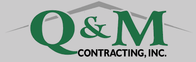

QandMcontracting.com is the first website that I developed. I made the first version in my Software Engineering class as my final project in order to learn HTML, CSS, and JavaScript because I had never used them before that. This website sparked my interest in web-dev because multiple customers reached out to my dad and told them that they were impressed by it. After I realized that the website had this traffic, I decided to look into different CMS's and decided to use WIX to redesign it to make it feel more professional.